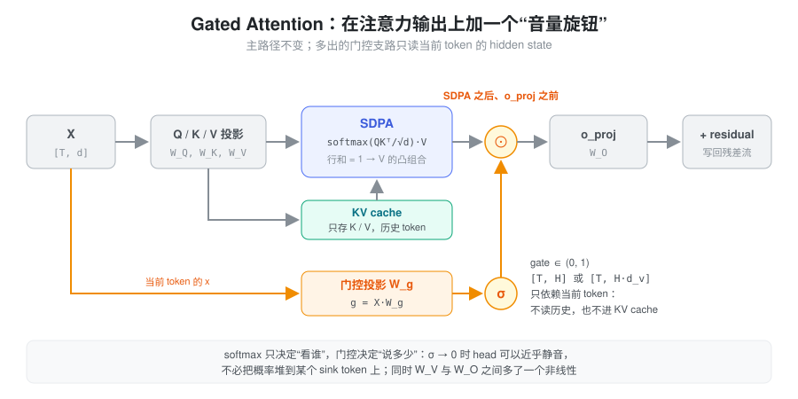
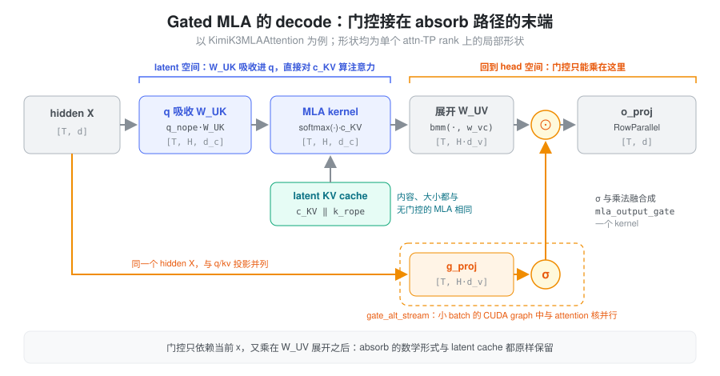
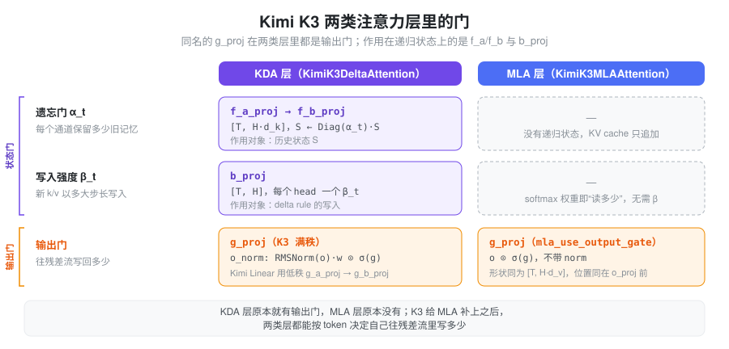

问题：softmax 只能决定“看谁”，不能决定“说多少”
标准注意力里，每个 head 的输出是 value 的加权平均：
o_i=\sum_j p_{ij}\,v_j,\qquad \sum_j p_{ij}=1
权重 p_{ij} 来自 softmax，行和恒为 1，所以输出永远是历史 value 的凸组合。这带来几个结构性的问题：
- head 没法“不说话”。当某个 head 对当前 token 没什么有用信息时，它也必须把 1 的概率分出去。模型学到的办法是把概率堆到一个固定位置（通常是第一个 token），让那里的 value 接近无害——这就是 attention sink。为了配合 sink，残差流里还会长出个别数值极大的通道（massive activation），给量化和训练稳定性都添麻烦。
- value 到输出是一条纯线性路径。把 v_j=x_jW_V^h 代进去，单个 head 的贡献是 \big(\sum_j p_{ij}x_j\big)W_V^hW_O^h：softmax 之后，W_V^h 和 W_O^h 之间没有任何非线性，两者合起来只相当于一个秩不超过 d_h 的线性映射。
- 输出强度不随当前 token 变化。softmax 决定了“从哪里读”，但“读出来的东西写回残差流时乘多大”只能交给固定的 W_O，当前 token 无法调节。
核心抽象：一个由当前 token 决定的输出门
Gated Attention 的做法很直接：在注意力输出上乘一个由当前 hidden state 生成的 sigmoid 门。
\tilde{\boldsymbol{O}} = \Big(\operatorname{softmax}\!\Big(\frac{\boldsymbol{Q}\boldsymbol{K}^{\mathsf T}}{\sqrt{d_h}}+M\Big)\boldsymbol{V}\Big) \odot \sigma\!\left(\boldsymbol{X}\boldsymbol{W}_g\right)
可以把它想成一个“音量旋钮”：softmax 决定看谁，门控决定说多少。几个性质一起，正好对应上面的三个问题：
- \sigma\in(0,1)，可以接近 0。 head 没用时直接把门关小，不必再借 sink token 来“空转”。
- 在 W_V 与 W_O 之间插了一个非线性。 门本身是输入的函数，O\odot\sigma(XW_g) 已经不是一个固定的低秩线性映射能表达的。
- 门只依赖当前 token 的 x。 它和 Q 一样属于“查询侧”，不读历史、不进 KV cache，decode 时不增加任何 cache 读写。

Qwen 团队的 Gated Attention for Large Language Models: Non-linearity, Sparsity, and Attention-Sink-Free（2025）系统比较了门控的位置与形式，结论是：加在 SDPA 输出之后、按 head 区分的 sigmoid 门效果最好。学到的门值大多很小（稀疏、随 query 变化），attention sink 与 massive activation 明显减弱，训练能承受更大的学习率，长上下文外推也更好。Qwen3-Next 的 full attention 层就采用了这种设计。
门控的粒度
粒度由 \boldsymbol{W}_g 的输出宽度决定：
| \boldsymbol{W}_g 输出宽度 | 门控形状 | 粒度 |
|---|---|---|
| H | [B,S,H] | head-wise：每个 head 一个标量 |
| H d_v | [B,S,H,d_v] | element-wise：每个 head 的每个 value 通道一个门 |
| d | [B,S,d] | 与 head 结构无关的 hidden 通道门 |
主流实现取 H
d_v，让门控宽度与 o_proj
的输入宽度一致：门可以直接与注意力输出逐元素相乘、不需要广播，kernel
融合最简单；粒度也比 head 级标量更细，同时保留了 head
之间的区分。
门控加在哪里
| 位置 | 门控结构 | 说明 |
|---|---|---|
SDPA 之后、o_proj 之前 |
[B,S,H,d_v] | 最常见，能区分 head，与 o_proj
输入对齐 |
o_proj 之后 |
[B,S,d] | 退化为 hidden 通道级，失去 head 维度，也不再位于 W_V 与 W_O 之间 |
| 乘在 value（或 MLA 的 latent c_{KV}）上 | [B,S,\cdot] | 门进入了被缓存的历史状态，语义变成“写入时的强度”，属于另一类设计 |
Gated MLA
MLA 和 Gated Attention 解决的是两个不同的问题：
- MLA 改变的是状态：用共享 latent c_{KV} 压缩每个 token 的 K/V，让 KV cache 与读取成本大幅下降；
- Gated Attention 改变的是输出：在注意力结果上乘一个随 token 变化的门。
Gated MLA 就是把后者接到前者的输出上。压缩路径、KV cache 结构、MQA absorb 全部不变，只在注意力输出之后多一条门控支路。 它不是新的压缩方案，而是对 MLA 表达能力与训练稳定性的一次低成本补强。
把 MLA 的压缩写开：
c_{KV}=XW^{DKV},\qquad K=c_{KV}W^{UK},\qquad V=c_{KV}W^{UV}
门控的输入是当前层的 X\in\mathbb{R}^{T\times d}，与
Q、KV 的投影并列；宽度取 Hd_v，作用在 W^{UV}
展开之后、o_proj 之前。以 Kimi K3 的 MLA
层为例，checkpoint 里 g_proj.weight 的形状是
12288\times
7168，o_proj.weight 是 7168\times
12288，两者恰好互为转置：12288=Hd_v 是全部 head
拼起来的注意力输出宽度，说明门控作用在带 head 结构的 value
空间上，而不是 hidden 通道上。
decode：门控不碰 absorb
MLA 在 decode 时走 MQA absorb 路径：把 W^{UK} 吸收进 Q，直接在 latent 空间对 c_{KV} 做注意力，最后再用 W^{UV} 展开：
\Big(\operatorname{softmax}\!\Big(\frac{(q_{\text{nope}}W^{UK\,\mathsf T})\,c_{KV}^{\mathsf T}}{\sqrt{d_h}}\Big)c_{KV}\Big)W^{UV}
门控乘在这一步之后。它只依赖 X，既不参与 W^{UK}、W^{UV} 的吸收变换，也不改变 latent 的缓存内容，MLA 的 decode 优化可以原样保留。反过来，如果把门乘在 c_{KV} 上，它就进入了 cache，absorb 也要跟着改——这正是“门控加在哪里”表格里第三行属于另一类设计的原因。

为什么 MLA 特别需要门控
除了上面的通用收益，MLA 还有两个自身原因：
- value 方向的自由度本来就被压缩过：所有 head 的 V 都由同一个 d_c 维 latent 经 W^{UV} 展开，d_c\ll Hd_v。门控不能改变 W^{UV} 的秩，但它提供了随 token 变化的乘性调制，相当于在不增加 cache 的前提下补回一部分区分度。
- MLA 常与线性注意力层混用：在 KDA + MLA 这类混合架构里，KDA 层本来就有一个输出门（门控 RMSNorm），而 MLA 层没有，两类层控制“往残差流写多少”的能力不对等。给 MLA 补上输出门后，两类层对称了，层间分工更容易平衡（见下文）。
代价
门控不是“零成本的一行乘法”，它的开销与一张独立投影矩阵相当：
| 项目 | 代价 |
|---|---|
| 参数量 | d\times Hd_v。K3 中为 7168\times 12288\approx 88\text{M}，BF16 约 176 MB（168 MiB）/ 层 |
| Prefill 计算 | 每 token d\cdot Hd_v
次乘加，与一次 o_proj 的 GEMM 同量级 |
| Decode 成本 | 每个 step 都要完整读一遍这张权重，是显存带宽开销而非 cache 开销 |
| KV cache | 完全不受影响，门控只依赖当前 hidden state |
| 数值 | 训练时 sigmoid 饱和区梯度很小；推理侧不同模型做法不同，见实现部分 |
因此在显存与通信预算里，g_proj 必须和
q_proj、o_proj
一样被当作主矩阵统计，不能因为它是“门控”就按小参数处理。
KDA 层里的门：别把 g_proj 认错
K3 的 KDA 层里也有一张
g_proj，名字和形状（Hd_v\times d）都和 MLA
层的一样。容易误以为它是 KDA
的“遗忘门”，但读代码可以确认：KDA 的
g_proj 同样是输出门，作用在
o_proj 之前；真正作用在递归状态 S 上的是另外两组投影：
f_a_proj → f_b_proj产生逐通道的遗忘门 \alpha_t，衰减历史状态；b_proj产生每个 head 的写入强度 \beta_t，控制 delta rule 写入新 k/v 的步长。
两类层的输出门只有一处差别：KDA 先对每个 head 的输出做
RMSNorm
再乘门（o_norm = FusedRMSNormGated(head_dim, activation="sigmoid")，即
\mathrm{RMSNorm}(o)\cdot
w\odot\sigma(g)），MLA 直接乘 o\odot\sigma(g)。K3 的 KDA 用满秩
g_proj（use_full_rank_gate），Kimi
Linear 用的是低秩 g_a_proj → g_b_proj。

所以读权重表或做显存分析时，两张 g_proj
可以按同一类矩阵（输出门）统计；KDA 的状态门要去看
f_* 和 b_proj。遗忘门的细节见 Linear Attention。
在 SGLang 中的实现
各模型的门控公式几乎一样，差别在于门从哪个投影里来、在哪里乘、怎么融合。
Qwen3-Next：门是 Q 投影的另一半
python/sglang/srt/models/qwen3_next.py 的
full attention
层（Qwen3HybridAttentionDecoderLayer，config 中
attn_output_gate）不单独建
g_proj，而是把 qkv_proj 的 Q
头数翻倍：total_num_heads * (1 + attn_output_gate)。前向时按
head 把这段输出 view 成 [T,H,2d_h] 再 chunk
成 q 和 gate，所以门和 Q
来自同一次 GEMM，宽度为 Hd_h（element-wise）。注意力算完后
attn_output * sigmoid(gate) 再进
o_proj；ROCm 上走融合的
sigmoid_gate_mul Triton kernel。
这种写法把“门属于查询侧”体现得很直白：它就是 Q 投影多出来的一半通道。
MLA 的通用挂点
DeepSeek 系 MLA 的公共前向在
python/sglang/srt/models/deepseek_common/attention_forward_methods/forward_mla.py。absorb
路径里留了两个可选 hook：
forward_absorb_prepare开头调用模型的prepare_attention_output_gate(hidden_states)准备门；- 注意力核输出经
torch.bmm(·, w_vc)展开成 [T, H\cdot d_v] 后、o_proj之前，调用_apply_attention_output_gate，它再分派给模型的apply_attention_output_gate或_apply_gated。
这正好对应图里“门控只能乘在 W_UV 展开之后”的位置。复用这套 hook 的模型各有取舍：
- Hunyuan V4（
HYV4Attention.linear_gate，宽度 H\cdot d_v）：在 hpc 后端下 prepare 阶段直接把 hidden state 交出去，由gated_mla_gemm把门控投影的 GEMM 和门控乘法放进同一个 kernel；其他后端仍是先投影、再 sigmoid 相乘。 - Bailing（
DsV3MLA）：用gated_attention_proj_granularity_type在head_wise（宽度 H，乘法时广播到 d_v）和element_wise（宽度 H\cdot d_v）之间切换，sigmoid 先升到 fp32 再算。
Kimi K3：包住 o_proj
python/sglang/srt/models/kimi_k3.py 的
KimiK3MLAAttention 继承
DeepseekV2AttentionMLA，由
mla_use_output_gate
打开门控。几个值得知道的工程细节：
- 按 attn-TP 切列。
g_proj是ColumnParallelLinear(hidden_size, num_attention_heads * v_head_dim, parallel_group="attn_tp")。MLA 的 head 本来就在 attention-TP 组内切分，门按同样的方式切列，本地门的列与本地 head 的输出一一对齐，乘法不需要任何通信。 - 在实例上包
o_proj.forward。o_proj在父类各条前向路径的深处被调用，K3 没有改这些路径，而是在__init__里把self.o_proj.forward换成_gated_o_proj_forward：forward先把 hidden state 存进_gate_hidden_states，等o_proj被调用时再算门、乘门、调用原始 forward。权重加载、reduce_results都不受影响。 - 门控 GEMM 与 attention 并行。CUDA graph
capture 时，若 token 数不超过
_gate_bs_limit（Blackwell 128，其他 64），_fork_output_gate在前向开头就把gate_alt_streamfork 出来，_compute_output_gate在旁路 stream 上跑g_proj，再由主 stream 等待。小 batch 时 attention 核占不满 SM，这张 Hd_v\times d 的 GEMM 可以藏进去；batch 更大时 overlap 只剩同步开销，就退回串行。 - sigmoid
与乘法融合。
mla_output_gate.kimi_k3_mla_output_gate在 bf16、同形状、连续的条件下（covered()）用一个 kernel 完成x * sigmoid(gate)，并刻意保留两次 bf16 舍入，与未融合的torch.sigmoid+ 乘法逐位一致；条件不满足时回退到 PyTorch 写法。
最小实现
下面省略 RoPE、KV cache 与 MQA absorb，只保留 latent 压缩与输出门控的位置：
class GatedMLA(nn.Module):
def __init__(self, d_model, n_heads, d_qk, d_v, d_c):
super().__init__()
self.n_heads, self.d_qk, self.d_v = n_heads, d_qk, d_v
# MLA 的 latent 压缩：低秩 Q 与共享的 KV latent
self.q_a_proj = nn.Linear(d_model, d_c, bias=False)
self.q_b_proj = nn.Linear(d_c, n_heads * d_qk, bias=False)
self.kv_a_proj = nn.Linear(d_model, d_c, bias=False)
self.kv_b_proj = nn.Linear(d_c, n_heads * (d_qk + d_v), bias=False)
# 门控宽度取 H * d_v，与 o_proj 的输入宽度一致
self.g_proj = nn.Linear(d_model, n_heads * d_v, bias=False)
self.o_proj = nn.Linear(n_heads * d_v, d_model, bias=False)
def forward(self, x):
B, S, _ = x.shape
q = self.q_b_proj(self.q_a_proj(x)).view(B, S, self.n_heads, self.d_qk)
kv = self.kv_b_proj(self.kv_a_proj(x)).view(
B, S, self.n_heads, self.d_qk + self.d_v
)
k, v = kv.split([self.d_qk, self.d_v], dim=-1)
q, k, v = (t.transpose(1, 2) for t in (q, k, v)) # [B, H, S, *]
scores = (q @ k.transpose(-1, -2)) * self.d_qk ** -0.5
out = scores.softmax(dim=-1) @ v # [B, H, S, d_v]，真实实现需先加 causal mask
# [B, S, H, d_v]，每个 head 的每个 value 通道单独门控
gate = torch.sigmoid(self.g_proj(x)).view(B, S, self.n_heads, self.d_v)
out = out.transpose(1, 2) * gate
return self.o_proj(out.reshape(B, S, -1))常见面试问题
- Gated Attention 解决什么问题？softmax 输出是 value 的凸组合，head 无法“静音”，于是出现 attention sink 和 massive activation；门控提供了随 token 变化的输出强度和 W_V、W_O 之间的非线性。
- 门控能不能提高 MLA 的压缩率、减少 KV cache？不能。压缩发生在 token 状态维度，门控作用在输出维度，且门只依赖当前 hidden state，不进 cache。
- 为什么门控要加在
o_proj之前？那里还保留 head 与 value channel 的结构，能按 head 区分，也恰好位于 W_V 与 W_O 之间；过了o_proj就只剩 hidden 通道。 - 为什么 decode 阶段的门控不破坏权重吸收？门乘在 W^{UV} 展开之后，不参与 W^{UK}、W^{UV} 的吸收变换。
- Gated MLA 的代价是什么？一张与
o_proj同量级的 d\times Hd_v 矩阵，prefill 多一次 GEMM，decode 多一份权重读取带宽。 - K3 的 KDA 层也有
g_proj，它是遗忘门吗？不是，它同样是o_proj前的输出门（带 RMSNorm）；KDA 的遗忘门来自f_a_proj → f_b_proj，写入强度来自b_proj。
小结
Gated Attention 把“看谁”和“说多少”拆开：softmax
继续负责从历史里读什么，一个由当前 token 生成的 sigmoid
门负责读出来的东西写回残差流时乘多大。门只依赖当前 hidden
state，因此不进 KV cache；放在 SDPA
之后、o_proj 之前，既能按 head 区分，又给 W_V、W_O 之间补上了非线性，从而缓解
attention sink、massive activation 与训练不稳定。接到 MLA
上时，门乘在 W^{UV}
展开之后，latent cache 和 absorb
路径都原样保留，代价是一张与 o_proj
同量级的主矩阵及其 decode 带宽。